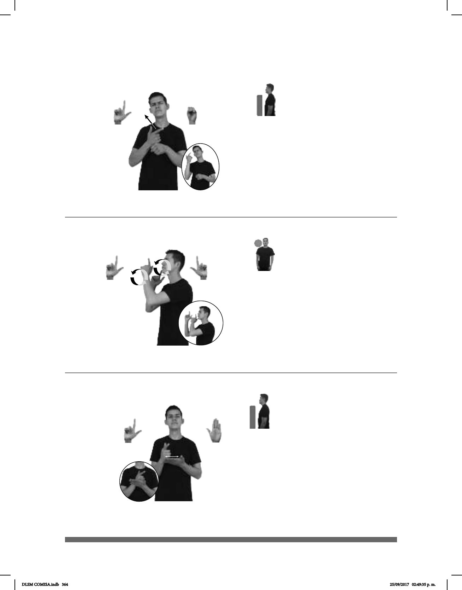

364
Seña: SB
MD L.1, MB S.1
MD y MB palmas hacia
adentro.
La MD inicia sobre MB y
termina a la altura del cuello. MB a la
altura del pecho.
MD recto.
Cabeza
ladeada hacia la derecha, ojos
semicerrados, boca abierta y mostrando
los dientes.
adj. Que tiene un sonido
bajo, de baja frecuencia.
Seña: SB
MD y MB L.1
MD palma hacia la
izquierda, MB palma hacia la
derecha.
MD y MB a la altura de
las mejillas.
La MD y la MB se
mueven formando círculos hacia el
frente alternadamente.
1. País ubicado en
el sur de Europa cuya capital es
Atenas. 2. adj. y sust. De Grecia o
relativo a este país europeo.
Seña: SB
MD L.1, MB B-P.2
MD palma hacia la
izquierda, MB palma hacia arriba.
La MD inicia sobre los
dedos de MB y se desliza hacia su
muñeca. MB a la altura del pecho.
MD recto
repetidamente.
adj. y sust. Que es
del color de la ceniza o del cielo
cuando está nublado; que su color
resulta de la mezcla de blanco y
negro.
(L-71)
2
(L-70)
(L-72)
__muy_
TROMBÓN SONIDO GRAVE TENER
El trombón tiene un sonido muy grave.
GRECIA pro-YO YA VIAJAR
allá
COLOR GRIS pro-YO GUSTAR
Me gusta el color gris.
DLSM COMISA.indb 364 25/09/2017 02:49:35 p. m.